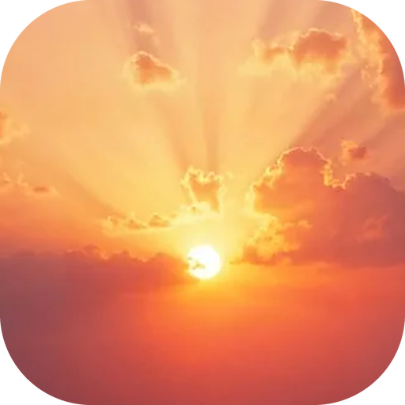

<!doctype html>
<html lang="ru">
  <head>
    <meta charset="utf-8" />
    <meta name="viewport" content="width=device-width, initial-scale=1" />
    <!-- Локальная страница без внешних ресурсов. Сервер проверяет главный процесс и сообщает сюда, когда можно открывать Sunnet. -->
    <meta http-equiv="Content-Security-Policy" content="default-src 'none'; style-src 'unsafe-inline'; script-src 'unsafe-inline'; img-src 'self' file: data:" />
    <title>Sunnet</title>
    <style>
      :root {
        color-scheme: dark;
        --bg: #1a0d08;
        --text: #fff7ec;
        --muted: rgba(255, 244, 228, 0.72);
        --faint: rgba(255, 244, 228, 0.5);
        --bar-track: rgba(255, 255, 255, 0.16);
        --bar-from: #ffd68a;
        --bar-to: #ff9a4a;
        --bar-glow: rgba(255, 196, 120, 0.85);
        --ray: 255, 238, 200;
        --glow-core: rgba(255, 252, 238, 0.95);
        --glow-mid: rgba(255, 210, 140, 0.45);
        --shade: rgba(20, 8, 4, 0.82);
      }
      * {
        box-sizing: border-box;
      }
      html,
      body {
        height: 100%;
        margin: 0;
        overflow: hidden;
        background: var(--bg);
        color: var(--text);
        font: 15px/1.45 'Segoe UI', system-ui, -apple-system, Roboto, 'Helvetica Neue', Arial, sans-serif;
        user-select: none;
        -webkit-user-select: none;
        cursor: default;
      }
      .scene {
        position: fixed;
        inset: 0;
        overflow: hidden;
      }
      .photo {
        position: absolute;
        background: url('assets/sunset.jpg') center / cover no-repeat;
        filter: saturate(1.08) contrast(1.04);
        will-change: transform;
        animation: photo-in 1.6s cubic-bezier(0.2, 0.8, 0.2, 1) both;
      }
      @keyframes photo-in {
        from {
          opacity: 0;
          filter: blur(14px) saturate(1.08);
        }
      }
      .rays {
        position: absolute;
        left: 0;
        top: 0;
        width: 0;
        height: 0;
        pointer-events: none;
        mix-blend-mode: screen;
      }
      .rays > i {
        position: absolute;
        border-radius: 50%;
        transform: translate(-50%, -50%) rotate(var(--a, 0deg));
        -webkit-mask-image: radial-gradient(circle, #000 0%, rgba(0, 0, 0, 0.55) 22%, transparent 62%);
        mask-image: radial-gradient(circle, #000 0%, rgba(0, 0, 0, 0.55) 22%, transparent 62%);
        will-change: transform, opacity;
      }
      .glow,
      .halo {
        position: absolute;
        left: 0;
        top: 0;
        border-radius: 50%;
        pointer-events: none;
        mix-blend-mode: screen;
        will-change: transform, opacity;
      }
      .glow {
        width: 520px;
        height: 520px;
        margin: -260px 0 0 -260px;
        background: radial-gradient(circle, var(--glow-core) 0%, var(--glow-mid) 14%, rgba(255, 180, 110, 0.12) 38%, transparent 66%);
      }
      .halo {
        width: 60px;
        height: 60px;
        margin: -30px 0 0 -30px;
        background: radial-gradient(circle, #fff 0%, rgba(255, 250, 235, 0.9) 35%, transparent 70%);
        filter: blur(1px);
      }
      .flare {
        position: absolute;
        left: 0;
        top: 0;
        border-radius: 50%;
        pointer-events: none;
        mix-blend-mode: screen;
        will-change: transform, opacity;
      }
      canvas {
        position: absolute;
        inset: 0;
        width: 100%;
        height: 100%;
        pointer-events: none;
      }
      .shade {
        position: absolute;
        inset: auto 0 0 0;
        height: 42%;
        background: linear-gradient(to top, var(--shade), transparent);
        pointer-events: none;
      }
      .hud {
        position: fixed;
        left: 0;
        right: 0;
        bottom: 0;
        padding: 0 clamp(20px, 4vw, 56px) clamp(22px, 4vh, 40px);
        animation: hud-in 1s 0.3s cubic-bezier(0.2, 0.8, 0.2, 1) both;
      }
      @keyframes hud-in {
        from {
          opacity: 0;
          transform: translateY(14px);
        }
      }
      .brand {
        display: flex;
        align-items: center;
        gap: 12px;
        margin-bottom: 18px;
      }
      .brand img {
        width: 40px;
        height: 40px;
        border-radius: 11px;
        box-shadow: 0 6px 24px rgba(0, 0, 0, 0.35), 0 0 0 1px rgba(255, 255, 255, 0.18);
      }
      .brand b {
        font-size: 24px;
        font-weight: 700;
        letter-spacing: -0.01em;
        text-shadow: 0 2px 14px rgba(0, 0, 0, 0.35);
      }
      .row {
        display: flex;
        align-items: baseline;
        justify-content: space-between;
        gap: 16px;
        margin-bottom: 10px;
      }
      .status {
        font-size: 15px;
        font-weight: 600;
        text-shadow: 0 1px 10px rgba(0, 0, 0, 0.45);
      }
      .pct {
        font-size: 15px;
        font-weight: 700;
        font-variant-numeric: tabular-nums;
        text-shadow: 0 1px 10px rgba(0, 0, 0, 0.45);
      }
      .bar {
        position: relative;
        height: 6px;
        border-radius: 3px;
        background: var(--bar-track);
        overflow: hidden;
        backdrop-filter: blur(6px);
      }
      .bar > i {
        position: absolute;
        inset: 0 auto 0 0;
        width: 0;
        border-radius: inherit;
        background: linear-gradient(90deg, var(--bar-from), var(--bar-to));
        box-shadow: 0 0 16px var(--bar-glow);
        transition: width 0.35s cubic-bezier(0.2, 0.8, 0.2, 1);
      }
      .bar > i::after {
        content: '';
        position: absolute;
        inset: 0;
        background: linear-gradient(90deg, transparent, rgba(255, 255, 255, 0.65), transparent);
        transform: translateX(-100%);
        animation: sheen 1.6s ease-in-out infinite;
      }
      @keyframes sheen {
        to {
          transform: translateX(100%);
        }
      }
      .hint {
        margin: 12px 0 0;
        min-height: 1.4em;
        font-size: 13px;
        color: var(--muted);
        text-shadow: 0 1px 8px rgba(0, 0, 0, 0.45);
        transition: opacity 0.4s;
      }
      .leaving .scene,
      .leaving .hud {
        transition:
          opacity 0.5s ease,
          transform 0.5s ease;
        opacity: 0;
      }
      .leaving .scene {
        transform: scale(1.04);
      }
      @media (prefers-reduced-motion: reduce) {
        .bar > i::after {
          animation: none;
        }
      }
    </style>
  </head>
  <body>
    <div class="scene" aria-hidden="true">
      <div class="photo" id="photo"></div>
      <div class="rays" id="rays"><i id="r1"></i><i id="r2"></i></div>
      <div class="glow" id="glow"></div>
      <div class="halo" id="halo"></div>
      <canvas id="motes"></canvas>
      <div id="flares"></div>
      <div class="shade"></div>
    </div>
    <footer class="hud">
      <div class="brand"><b id="name">Sunnet</b></div>
      <div class="row">
        <span class="status" id="status" role="status" aria-live="polite">Подключаемся…</span>
        <span class="pct" id="pct">0%</span>
      </div>
      <div class="bar" role="progressbar" aria-label="Загрузка" aria-valuemin="0" aria-valuemax="100" id="bar"><i id="fill"></i></div>
      <p class="hint" id="hint"></p>
    </footer>

    <script>
      'use strict';
      const params = new URLSearchParams(location.search);
      const night = params.get('night') === '1';
      const mode = params.get('mode') || 'start';
      if (night) {
        document.getElementById('name').textContent = 'Lynnet';
        document.getElementById('logo').src = 'assets/icon-night.png';
      }
      const reduce = matchMedia('(prefers-reduced-motion: reduce)').matches;

      // ─── Сцена: фото, лучи, свечение, блики, пылинки ───────────────────────
      // Солнце на фото — в точке (0.5, 0.64) от его размеров.
      const SUN = { x: 0.5, y: 0.64 };
      const photo = document.getElementById('photo');
      const rays = document.getElementById('rays');
      const r1 = document.getElementById('r1');
      const r2 = document.getElementById('r2');
      const glow = document.getElementById('glow');
      const halo = document.getElementById('halo');
      const flaresBox = document.getElementById('flares');
      const canvas = document.getElementById('motes');
      const ctx = canvas.getContext('2d');

      // Повторяемые «случайные» числа: веер лучей одинаковый при каждом запуске
      let seed = 20261022;
      const rnd = () => ((seed = (seed * 1664525 + 1013904223) >>> 0) / 4294967296);

      function fan(count, maxAlpha) {
        const stops = [];
        let a = 0;
        while (a < 360) {
          const w = 0.6 + rnd() * 3.2;
          const gap = 1.5 + rnd() * 6;
          const alpha = (0.25 + rnd() * 0.75) * maxAlpha;
          stops.push(`rgba(var(--ray), 0) ${a.toFixed(2)}deg`, `rgba(var(--ray), ${alpha.toFixed(3)}) ${(a + w / 2).toFixed(2)}deg`, `rgba(var(--ray), 0) ${(a + w).toFixed(2)}deg`);
          a += w + gap;
        }
        return `conic-gradient(from 0deg, ${stops.join(', ')})`;
      }
      r1.style.background = fan(80, 0.34);
      r2.style.background = fan(60, 0.22);

      // Блики объектива: вдоль линии от солнца через курсор
      const FLARES = [
        { k: 0.35, r: 26, c: 'rgba(255, 220, 160, 0.30)' },
        { k: 0.62, r: 12, c: 'rgba(140, 220, 255, 0.35)' },
        { k: 0.9, r: 54, c: 'rgba(255, 170, 120, 0.16)' },
        { k: 1.25, r: 18, c: 'rgba(190, 255, 200, 0.28)' },
        { k: 1.6, r: 90, c: 'rgba(255, 140, 200, 0.10)' },
        { k: 2.05, r: 30, c: 'rgba(160, 190, 255, 0.24)' },
      ];
      const flareEls = FLARES.map((f) => {
        const el = document.createElement('i');
        el.className = 'flare';
        el.style.width = el.style.height = `${f.r * 2}px`;
        el.style.margin = `-${f.r}px 0 0 -${f.r}px`;
        el.style.background = `radial-gradient(circle, ${f.c} 0%, ${f.c} 55%, transparent 72%)`;
        flaresBox.appendChild(el);
        return el;
      });

      let W = 0;
      let H = 0;
      let dpr = 1;
      let layout = { left: 0, top: 0, size: 0 };
      const motes = [];
      function resize() {
        W = innerWidth;
        H = innerHeight;
        dpr = Math.min(2, devicePixelRatio || 1);
        canvas.width = W * dpr;
        canvas.height = H * dpr;
        // Фото с запасом на параллакс; солнце — чуть ниже середины экрана
        const size = Math.max(W, H) * 1.14;
        let top = H * 0.56 - SUN.y * size;
        top = Math.min(0, Math.max(H - size, top));
        layout = { left: W / 2 - SUN.x * size, top, size };
        photo.style.width = photo.style.height = `${size}px`;
        const d = Math.hypot(W, H) * 2.2;
        for (const el of [r1, r2]) {
          el.style.width = el.style.height = `${d}px`;
        }
        if (!motes.length) {
          for (let i = 0; i < 90; i++) {
            motes.push({ x: rnd() * W, y: rnd() * H, z: 0.3 + rnd() * 0.7, s: 0.6 + rnd() * 1.8, v: 0.08 + rnd() * 0.3, p: rnd() * Math.PI * 2 });
          }
        }
      }
      addEventListener('resize', resize);
      resize();

      // ─── Курсор: настоящий или «призрачный», если мышь давно не двигалась ──
      const pointer = { x: W * 0.62, y: H * 0.42 };
      const smooth = { x: pointer.x, y: pointer.y };
      let lastMove = -1e9;
      addEventListener('pointermove', (e) => {
        pointer.x = e.clientX;
        pointer.y = e.clientY;
        lastMove = performance.now();
      });
      addEventListener('pointerleave', () => (lastMove = -1e9));

      const lerp = (a, b, t) => a + (b - a) * t;
      let t0 = performance.now();
      function frame(now) {
        const t = (now - t0) / 1000;
        const sunX = layout.left + SUN.x * layout.size;
        const sunY = layout.top + SUN.y * layout.size;
        // Мышь не двигается 2.5 с — сцена «оживает» сама: курсор плавно кружит у солнца
        const idle = now - lastMove > 2500;
        const target = idle
          ? { x: sunX + Math.cos(t * 0.33) * W * 0.32, y: sunY - H * 0.18 + Math.sin(t * 0.47) * H * 0.2 }
          : pointer;
        const k = reduce ? 1 : idle ? 0.02 : 0.08;
        smooth.x = lerp(smooth.x, target.x, k);
        smooth.y = lerp(smooth.y, target.y, k);

        // Отклонение от центра: −1…1
        const nx = (smooth.x - W / 2) / (W / 2);
        const ny = (smooth.y - H / 2) / (H / 2);
        const px = reduce ? 0 : -nx * 18;
        const py = reduce ? 0 : -ny * 12;
        photo.style.transform = `translate(${layout.left + px}px, ${layout.top + py}px)`;
        const sx = sunX + px;
        const sy = sunY + py;

        // Чем ближе курсор к солнцу, тем ярче свет; лучи поворачиваются за курсором
        const dist = Math.hypot(smooth.x - sx, smooth.y - sy) / Math.hypot(W, H);
        const near = Math.max(0, 1 - dist * 2.2);
        const angle = (Math.atan2(smooth.y - sy, smooth.x - sx) * 180) / Math.PI;
        const breathe = reduce ? 0 : Math.sin(t * 0.9) * 0.06;
        rays.style.transform = `translate(${sx}px, ${sy}px)`;
        r1.style.setProperty('--a', `${(reduce ? 0 : t * 1.6) + angle * 0.12}deg`);
        r2.style.setProperty('--a', `${(reduce ? 0 : -t * 1.1) - angle * 0.08}deg`);
        r1.style.opacity = (0.55 + near * 0.45 + breathe).toFixed(3);
        r2.style.opacity = (0.4 + near * 0.5 - breathe).toFixed(3);
        const gs = 1 + near * 0.5 + breathe;
        glow.style.transform = `translate(${sx}px, ${sy}px) scale(${gs.toFixed(3)})`;
        glow.style.opacity = (0.7 + near * 0.3).toFixed(3);
        halo.style.transform = `translate(${sx}px, ${sy}px) scale(${(1 + near * 0.35).toFixed(3)})`;

        // Блики: от солнца через курсор, ярче, когда курсор у солнца
        FLARES.forEach((f, i) => {
          const fx = sx + (smooth.x - sx) * f.k * 1.4;
          const fy = sy + (smooth.y - sy) * f.k * 1.4;
          const el = flareEls[i];
          el.style.transform = `translate(${fx}px, ${fy}px)`;
          el.style.opacity = (0.35 + near * 0.65).toFixed(3);
        });

        // Пылинки в лучах: медленно поднимаются и мерцают, ближние сильнее смещаются за мышью
        ctx.setTransform(dpr, 0, 0, dpr, 0, 0);
        ctx.clearRect(0, 0, W, H);
        for (const m of motes) {
          if (!reduce) {
            m.y -= m.v * m.z;
            m.x += Math.sin(t * 0.5 + m.p) * 0.12;
            if (m.y < -10) {
              m.y = H + 10;
              m.x = Math.random() * W;
            }
          }
          const mx = m.x - nx * 30 * m.z;
          const my = m.y - ny * 20 * m.z;
          const lit = Math.max(0, 1 - Math.hypot(mx - sx, my - sy) / (Math.max(W, H) * 0.6));
          const a = (0.15 + 0.55 * lit) * (0.6 + 0.4 * Math.sin(t * 2 + m.p));
          ctx.fillStyle = `rgba(255, 240, 210, ${a.toFixed(3)})`;
          ctx.beginPath();
          ctx.arc(mx, my, m.s * m.z, 0, Math.PI * 2);
          ctx.fill();
        }
        requestAnimationFrame(frame);
      }
      requestAnimationFrame(frame);

      // ─── Прогресс: идёт сам, пока сервер просыпается; главный процесс говорит «готово» ──
      const statusEl = document.getElementById('status');
      const pctEl = document.getElementById('pct');
      const fill = document.getElementById('fill');
      const bar = document.getElementById('bar');
      const hint = document.getElementById('hint');
      const started = performance.now();
      let done = false;
      let offline = !navigator.onLine;
      let shown = 0;

      const HINTS = [
        'Сервер Sunnet засыпает, когда им долго никто не пользуется, — первый запуск после перерыва занимает до минуты.',
        'Подвигайте мышью — солнце следит за курсором.',
        'Звонки до 50 человек — во вкладке «Звонки», кнопка «+».',
        'Ctrl + колесо мыши на рабочем столе — отдалить или приблизить окна.',
        'Ночью приложение становится Lynnet — с луной вместо солнца.',
      ];
      let hintIndex = mode === 'reconnect' ? 0 : Math.floor(Math.random() * HINTS.length);
      function nextHint() {
        hint.style.opacity = '0';
        setTimeout(() => {
          hint.textContent = HINTS[hintIndex % HINTS.length];
          hintIndex++;
          hint.style.opacity = '1';
        }, 400);
      }
      nextHint();
      setInterval(nextHint, 7000);

      function render() {
        const sec = (performance.now() - started) / 1000;
        // Плавная кривая: к 30 секундам ~85 %, дальше медленно подбирается к 96 %
        const target = done ? 100 : offline ? shown : Math.min(96, 96 * (1 - Math.exp(-sec / 15)));
        shown = Math.max(shown, target);
        const p = Math.floor(shown);
        fill.style.width = `${shown}%`;
        pctEl.textContent = `${p}%`;
        bar.setAttribute('aria-valuenow', String(p));
        if (done) statusEl.textContent = 'Готово — открываем';
        else if (offline) statusEl.textContent = 'Нет подключения к интернету — ждём сеть';
        else if (mode === 'reconnect' && sec < 4) statusEl.textContent = 'Связь с сервером прервалась — переподключаемся';
        else if (sec < 3) statusEl.textContent = 'Подключаемся к серверу';
        else if (sec < 12) statusEl.textContent = 'Запускаем сервер';
        else if (sec < 30) statusEl.textContent = 'Сервер просыпается после перерыва';
        else statusEl.textContent = 'Ещё немного';
        if (!done) setTimeout(render, 200);
      }
      render();
      addEventListener('online', () => (offline = false));
      addEventListener('offline', () => (offline = true));

      // Вызывает главный процесс, когда сервер ответил
      window.sunnetReady = () => {
        done = true;
        render();
        setTimeout(() => document.body.classList.add('leaving'), 350);
      };
    </script>
  </body>
</html>
